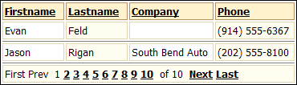
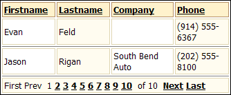
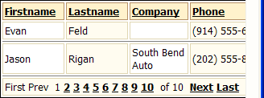
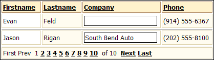
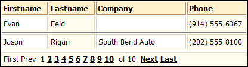

Controlling a Field's Width
If you want to prevent the wrapping of the field data, one option is to use the "nowrap" command. In the following picture it prevents the phone field from wrapping to 2 lines, even as the page becomes too narrow to show the whole grid.
Create a new tabular grid based on the AlphaSports customer table.
Display the Component Type menu of the Grid Component Builder.
Select the Grid is Read only radio button.
Display the Grid > Properties menu.
Change the Layout Options > Rows of data to 2.
Display the Grid > Fields menu.
Move the "Firstname", "Lastname", "Company", and "Phone" fields from the Available Fields list to the Selected Fields list.
Click Browser to see what the component will look like.
By default the Grid Builder uses label controls to display the field values.

The company and phone fields wrap as the page becomes more narrow.

Select the "phone" field in the Selected Fields list.
Click the
 in the Label Properties > In-line Style field.
in the Label Properties > In-line Style field.In the resulting Style Editor display the Text tab.
Set the Wrapping field to "nowrap".
Click Browser to see what the component will look like.

Another strategy is to prevent wrapping is to change the control to a "TextBox" (note the black border in the picture below), which can have a specified width. In the picture below you can see that the company field will not narrow as the page becomes narrower.
Display the Grid > Fields menu.
Select the "company" field in the Selected Fields list.
In the Display Settings > Control type field select "TextBox".
In the TextBox Properties > Size field set the desired width in characters.
Click Browser to see what the component will look like.

If you want the TextBox to appear the same as a Label, you can change its in-line style.
Display the Grid > Fields menu.
Select the "company" field in the Selected Fields list.
Click the
in the TextBox Properties > In-line style to display the Style Editor.Display the Edges tab.
Set the Border Edge field to "All".
Set the Style field to "All".
Set the Width field to 0.
Click OK. The resulting HTML code is " border-style: solid; border-width: 0; ".
Click Browser to see what the component will look like.

See Also